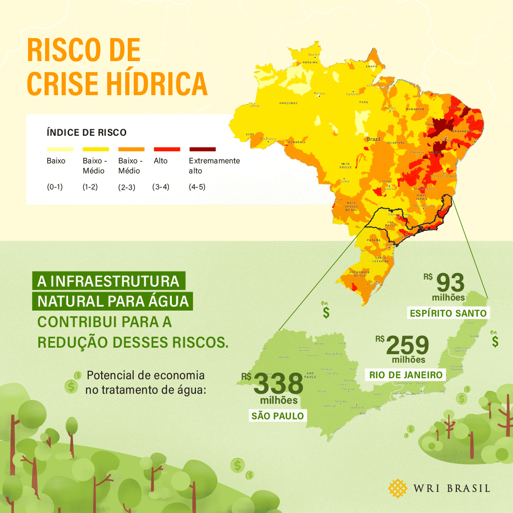

40% da população mundial sofre com escassez de água.
Calcule Seu Consumo🌍 Crise Hídrica Global
📊 Dados Alarmantes
💧 Desperdício Doméstico
- Vazamentos residenciais: Perdem até 20% do abastecimento urbano global (ONU Água).
- Banho de 15 min: 135 L = consumo diário recomendado para 3 pessoas pela OMS.
- Lavar calçadas com mangueira: Gasta 280 L em 15 minutos (ANA).
🌾 Impacto Agrícola
- Irrigação ineficiente: 60% da água se perde por evaporação antes de chegar às plantas.
- Algodão (1 camiseta): 2.700 L de água na produção.
- Arroz (1 kg): 2.500 L vs trigo (1.300 L).
⚠️ Cenário Futuro
- 2030: Déficit hídrico global de 40%.
- Cidades em risco: São Paulo, Cidade do Cabo e Chennai já enfrentaram "Dia Zero".
- Conflitos: 700 disputas por água registradas no século XXI.
🗺️ Mapa de Estresse Hídrico
Classificação por cores:
- Alto estresse: Nordeste.
- Médio estresse: Centro e Sul.
- Baixo estresse: Norte.
Foto Crédito: WRI Brasil | Dados por bacias hidrográficas
💡 Dicas Práticas

Banhos Curtos
5 minutos podem economizar até 25 L por dia.

Água da Chuva
Cisternas domésticas reduzem o uso de água potável em até 30%.

Conserte Vazamentos
Um vazamento contínuo pode desperdiçar mais de 1.000 L/mês.

Use Carga Completa
Máquinas com carga total economizam até 50% de água por ciclo.
🔢 Calculadora de Consumo Avançada
❓ Quiz Interativo
1/3
📈 Impacto do Consumo Consciente

Redução de até 20%
Diminua sua conta mensal e o desperdício diário.

50.000 L Economizados
Equivalem a mais de 10 famílias por um mês.

+1.000 ha Preservados
Contribuição direta à conservação de mananciais.